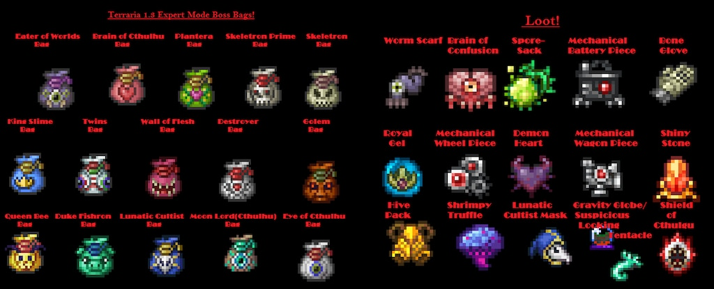
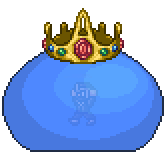
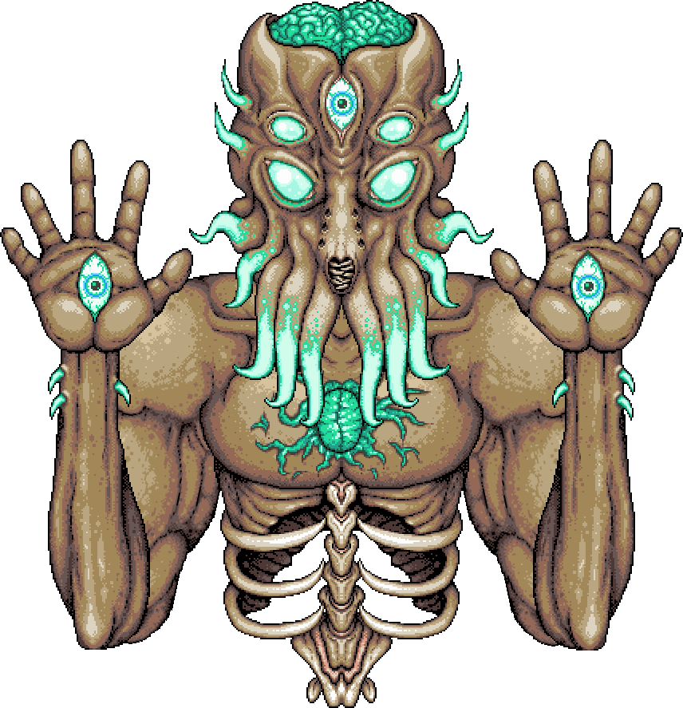

There are 19 main bosses in terraria, 8 pre hardmode, and 11 in hardmode. There is a recomended order for bosses but no specific order until late hardmode.
The only bosses needed to be fought in order to "progress" are, wall of flesh to enter hardmode, mech bosses so you can summon plantera, plantera to unlock the dungeon, golem to start the lunatic cultist event, and then moonlord to beat the game.
- King Slime
- Eye of Cuthulu
- Eater of Worlds
- Brain of Cuthulu
- Queen Bee
- Skeletron
- Deerclops (dont bother with this one)
- Wall of Flesh | end of pre hardmode
- queen slime
- The Twins
- Destroyer
- Skeletron Prime
- Plantera
- Golumn
- Duke Fishron
- Empress of Light
- Lunatic Cultist
- MoonLord
- Secret boss Mechdusa
There are several event bosses but they are not are not as detailed or important as the others on the list.
  For more info on bosses, click on the wiki link here